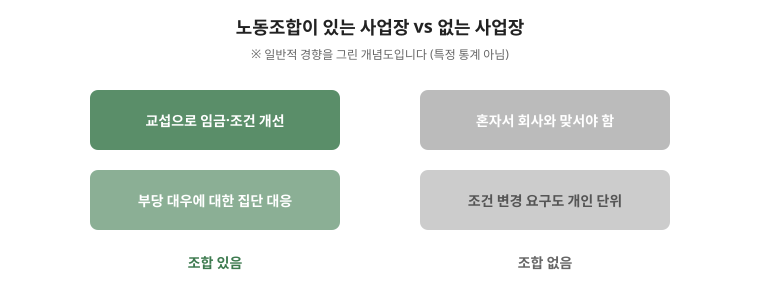

쟁의행위는 절차를 지켰는지가 핵심입니다. 목적이 정당해도 절차가 어긋나면 법적 보호를 받지 못합니다. 이 글은 기본 전제부터 절차 요건·현장에서 지킬 선·쟁의 이후 대응까지 순서대로 정리한 안내입니다. 적법성 판단은 구체적 사실에 따라 결론이 달라지므로 마지막 점검표까지 읽고 반드시 전문가 상담을 거치세요.

한눈에 보는 표 — 쟁의행위 4요건
| 요건 | 내용 | 남길 기록 |
|---|---|---|
| 목적 | 교섭 결렬 후 근로조건 개선 목적 | 교섭 요구·회의록·결렬 확인 |
| 절차 | 조정 신청 + 찬반투표 가결 | 조정 신청서·투표 공고·개표 기록 |
| 참여 | 자유로운 참여 보장, 강제 금지 | 참여 명단·교대 계획 |
| 방식 | 폭력·점거 등 위법 방식 배제 | 행동 수칙·교육 기록 |
1. 쟁의행위의 기본 전제
- 쟁의행위는 교섭이 결렬된 뒤의 수단이다. 교섭을 시도한 기록이 있어야 목적의 정당성을 설명할 수 있다.
- 정당한 쟁의행위는 민·형사 책임이 면제된다. 다만 폭력·점거 등 위법한 방식이 섞이면 개별 행위는 보호받지 못한다.
2. 절차 요건 — 조정과 찬반투표
- 쟁의행위 전에는 조정 절차를 거쳐야 한다. 조정 신청 대상과 기관은 사업장 성격에 따라 달라진다.
- 조합원 찬반투표에서 일정 비율 이상의 찬성을 받아야 한다. 투표 공고·개표 기록을 남겨 두는 것이 안전하다.
- 필수유지업무가 있는 사업장은 유지 인원·업무를 정하는 절차가 별도로 필요하다.
3. 현장에서 지켜야 할 선
- 조합원의 자유로운 참여를 보장해야 한다. 강제 참여나 불참자에 대한 압박이 확인되면 쟁의행위 자체의 정당성이 흔들린다.
- 생산시설 점거·대인 폭력·교통 방해는 형사책임으로 이어질 수 있다. 행위 방식을 사전에 정하고 교육한다.
- 참여자 명단·출입 기록·교대 계획을 남긴다. 이후 징계·손해배상 다툼에서 사실관계 자료가 된다.
4. 쟁의 이후 — 불이익은 부당노동행위
- 쟁의 종료 후 회사가 참여자에게 불이익을 주면 부당노동행위 검토 대상입니다. 인사 발령·징계 내역을 시간순으로 기록하세요. 관련 글 부당노동행위 글을 참고하세요.
- 합의서에 쟁의 기간 중 행위에 대한 불이익 금지 조항을 넣는 것이 이후 다툼을 줄입니다.
자주 틀리는 3가지
- “조정 없이 바로 파업” — 절차 요건을 건너뛰면 민·형사 면책을 받지 못합니다.
- “전원 찬성이라 투표 기록 불필요” — 공고·개표 기록이 없으면 절차 준수를 입증하기 어렵습니다.
- “쟁의 끝나면 끝” — 이후 불이익은 별개의 부당노동행위가 됩니다.
현장 체크리스트
- □ 교섭 시도·결렬 기록이 있는가
- □ 조정 신청을 했는가
- □ 찬반투표 공고·개표 기록을 남겼는가
- □ 필수유지업무 인원·업무를 정했는가
- □ 행동 수칙을 정하고 교육했는가
자주 묻는 질문
- Q. 투표 없이 파업하면 어떻게 되나요? — A. 절차 위반으로 민·형사 책임 문제가 생깁니다. 반드시 절차를 갖추세요.
- Q. 조합원이 아닌 동료에게 참여를 요구해도 되나요? — A. 자유로운 참여 보장이 원칙입니다. 강제·압박은 정당성을 훼손합니다.
- Q. 대표가 교섭 없이 파업을 선언했습니다. — A. 목적 정당성부터 상담이 필요합니다. 즉시 전문가 검토를 받으세요.
- Q. 파업 참여로 징계를 받았습니다. — A. 정당한 쟁의행위 참여를 이유로 한 불이익은 다툴 여지가 있습니다. 징계 통보서를 보관하세요.
근거와 원문
이 글은 2026-09-19 기준 일반 안내입니다. 쟁의행위의 적법성 판단은 구체적 사실에 따라 결론이 달라지므로 반드시 전문가 상담을 거치세요. 법률 자문이 아닙니다.